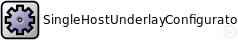
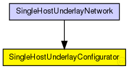
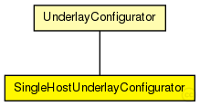

This documentation is released under the Creative Commons license
This documentation is released under the Creative Commons licenseConfigurator of the SingleHostUnderlay
Configures a single Host (with a connection to a real network)
Author: Stephan Krause, Ingmar Baumgart
The following diagram shows usage relationships between types. Unresolved types are missing from the diagram. Click here to see the full picture.
The following diagram shows inheritance relationships for this type. Unresolved types are missing from the diagram. Click here to see the full picture.
| UnderlayConfigurator (simple module) |
UnderlayConfigurator base module |
| SingleHostUnderlayNetwork (network) |
The SingleHostUnderlay ned-file See also: SingleHostUnderlayConfigurator |
| Name | Type | Default value | Description |
|---|---|---|---|
| terminalTypes | string |
list of terminal types |
|
| churnGeneratorTypes | string |
a list of churn generators to be used |
|
| transitionTime | double |
time to wait before measuring after init phase is finished |
|
| measurementTime | double |
duration of the simulation after init and transition phase |
|
| gracefulLeaveDelay | double |
time between prekill and removal from overlay |
|
| gracefulLeaveProbability | double |
probability of gracefull leave |
|
| nodeIP | string |
IP of the node |
|
| nodeInterface | string |
interface name |
|
| stunServer | string |
name of a STUN server (optional) |
|
| bootstrapIP | string |
IP of an overlay node for bootstrapping |
|
| bootstrapPort | int |
Port of the bootstrap node |
| Name | Value | Description |
|---|---|---|
| display | i=block/cogwheel | |
| class | SingleHostUnderlayConfigurator |
// // Configurator of the SingleHostUnderlay // // Configures a single Host (with a connection to a real network) // // @author Stephan Krause, Ingmar Baumgart // simple SingleHostUnderlayConfigurator extends UnderlayConfigurator { parameters: @class(SingleHostUnderlayConfigurator); string nodeIP; // IP of the node string nodeInterface; // interface name string stunServer; // name of a STUN server (optional) string bootstrapIP; // IP of an overlay node for bootstrapping int bootstrapPort; // Port of the bootstrap node }
This documentation is released under the Creative Commons license